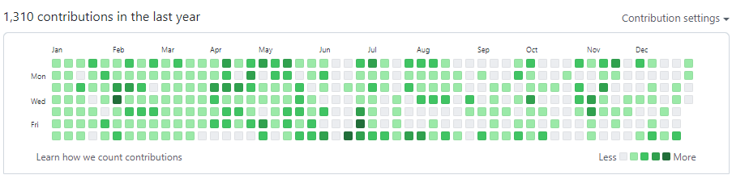

theme: condensed-night-purple highlight: ascetic
如果2021年有关键词，那就是改变。 –2021.12.05
1.前言
这篇文章在12月的时候我就想写了，然后想着12月还没过完呢，2021还在呢，我都没过完，为啥我要总结，然后11月也写了个2021前瞻总结，然后就想着等到1月1日写，正好也是星期六，然而从昨天晚上开始写，今天已经1月2日了，刚才在整理2020年的年终总结。
然后今年的改变其实还是蛮大的，也还是做了一些事情的，最重要的几件事情，就是：
-
坚持用文字记录自己每天的工作生活
-
坚持读书
-
换工作
最主要的应该就是这三件事情了，其他事情的优先级就没有以上三件事情高了。
2.文字里的2021
从2020年11月16号开始我就每天用笔记记录每天得生活，比如今天遇见什么好玩的事或者新鲜的事也或许只是做个简单的总结，一直记录到今天，让我年终总结和平时没事的时候有东西可以回顾回顾，思考自己在哪些方面需要改进，在哪些方面做的好需要继续保持。
1月
回顾了一下一月份每天的笔记记录，基本上就是围绕2个点在进行，一个是早睡早起，另一个是学习前端相关知识准备换工作跳槽，从笔记记录和现在对当时的记忆来看，这个月还是比较努力的，每天早上学，晚上也学，状态也还不错，然后每周会做总结和做下周计划，这个月是充实的学习的一个月。而且还有一点是，这个月的笔记记录每天都会记录很多文字，所以现在看那些文字能回忆起来的事情还比较多。
2月
回顾2月，这个主要的重点还是放在学习上，然后因为这个月是过年，也经常休息，但是学习也还是很努力的，因为想着年后要跳槽（埋下种子），而且还想着跳大厂（埋下种子）。这个月的后半个月因为跟公司谈妥了，决定不走了，慢慢把重点从学习转向了看书和工作。这个月的每天记录的文字也异常的多，工作和生活展现的淋漓尽致，看文字记录仿佛都是昨天一样。
3月
整个3月份陷入工作之中，在忙于工作的同时还在坚持每天读书和学一些算法，然后这个月也有早睡早起，还有做计划和总结，然后还自己亲自腌制了萝卜，事后证明不好吃，哈哈哈。然后这个还尝试自己做早饭和周末在家做饭吃，幸福感满满，就是这个月工作太多了，有点影响生活节奏。这个月的重心主要扑在了工作上，但是看书也没落下。文字记录依然每天都记录很多，还不错。

4月
4月份第一天我就当亲舅舅了，有了亲外甥，真的是大喜事啊。然后这个月主要的重点是在看书上，然后还有值得一提的是人生第一当演员，公司10周年庆，演个角色，完全是因为同事觉得我长得像，其实我当时是有点抗拒的，不想演，现在回过头想想，也就那么回事，人生中多了一份体验。然后这个月又下定决心提桶了，真的是反复下决心提桶啊，然后这个月还办了健身卡，开始健身了，然后月底回家一趟，因为五一要到了，提前回家，过年因为疫情也没回家，所以五一就提前回家。4月份的主要重点还是在看书上，算法被彻底放弃了，可惜啊。
5月
5月份月初的时候回家了，在家待了几天，然后5月整个月下班时间主要还是放在看书上，同时还有开始进行健身，然后还开始听书，开始下围棋，还去杭州参加了2021VueConf。同时，这个月也决定离职了，跟领导提了，也定了离职这件事情。总体来说，5月份的重点还在看书上，次重点在健身上，还不错的5月份。
6月
6月份前半个月基本上都是在看书加健身，然后后半个月是去西北旅行了一趟，然后离职跟一些同事吃吃散伙饭啥的，这个月主要的重点其实是在旅行和离职上，在6月的最后一天正式离职了。
7月
7月份主要实在准备面试和面试，7月的第一周还是在看书，虽然是裸辞，但是丝毫不慌，先看了5天的书，然后准备了大概一周，然后面试拿offer一周多的时间，然后就是准备入职的事情，在7月28号入职了我现在待的这家公司，整体上来说还是不错的。7月份的主要重点在准备面试和面试入职上。还有7月份还写了篇年中总结。
8月
8月份入职新的公司，学习react相关的技术栈，然后这个主要的重点还是在融入新公司适应新团队上面，看书和健身变成了偶尔的行为，然后主要的精力都放在了工作和学习上，总体来说，适应和融入新公司和团队还是比较快的，成功适应和融入新的环境。
9月
9月份状态不是很好，一直在思考工作生活的意义，思考不明白，还是瞎写了几篇相关文章《对工作与生活的思考》、《探索 尝试 意义 生活 思考》、《对职业规划的思考》，天天不知道在想什么，也想不明白，也试图去看看哲学相关的书，以寻求找到答案，然而并没找到答案，可能就是没有意义吧，然后这个月还搬家了，搬到公司附近了，然后这个月的读书相较之前更少了。9月份莫名奇妙的开始思考一些意义的问题，不是很有动力和向上的9月份。
10月
10月月初的时候是国庆假期，在家补了之前没看需要看书的时间，然后8号开始上班后就每天很困，因为假期作息乱了，所以在恢复作息，然后中间还打了一几天王者，这个月有点懒散了，除了上个班，好像其它啥事也没干，不如之前那么努力了，看书除掉月初假期看书了，后面基本没看。真躺平的10月份啊，躺的平平的。
11月
11月份主要的事情就是爸爸来北京了，然后请了一周假带爸爸到北京到处玩玩，然后吃些北京特色的吃的，然后还有就是这个月也有坚持看书，不过接近月末的时候又打起了王者，总体来说这个月还行了，完成了一个年初的Flag，带爸爸到北京玩玩。
12月
12月开始看剧看电影了，12月看了好几部电影，然后还看了动漫《小林家的龙女仆2》，看了电视剧《请回答1988》，真别说，这2个都是非常的好看，然后看书基本上没怎么看，看书属于是处于挣扎状态了，这个月也是除了上班就是躺平的状态了。
总结
文字里的2021一天不少，从年初的大段记录到年尾的一行一天的记录，让我再次回味了一下我的2021，总体来说，马马虎虎的，记录每天的生活这件事本身倒是坚持下来了，一天不少。
3.书籍里的2021
2021年我开始把一些看书记录，学习代码相关的东西放到git上了，然后年底可以量化的看看。

今年github的提交记录，主要是提交看书笔记相关的，然后还有一些平时学习的代码相关的，整体来说还是前半年比较努力，后半年就开始有点拉跨了。主要的提交的项目就是这个读书相关的工程了。今年读完的书有：
-
1.数学之美
-
2.时间简史
-
3.高效能人士的七个习惯
-
4.别闹了，费曼先生
-
5.你不知道的JavaScript(上卷)
-
6.世界因你不同
-
7.软技能代码之外的生存指南
-
8.红与黑
-
9.月亮与六便士
-
10.尘埃落定
-
11.巴菲特给儿女的一生忠告
-
12.云边有个小卖部（微信读书）
-
13.天堂旅行团（微信读书）
-
14.黑客与画家
-
15.从你的全世界路过（微信读书）
-
16.侣行十年（微信读书）
-
17.箭术与禅心
除了4本微信读书读的，其他的读的全部是纸质书，然后今年读书的时间保守估计应该超过了300个小时，只多不少，然后读书给我最大的感受就是提高了自己的认知水平，2022年读书肯定也还是要继续坚持的。今年其实还能读更多的书的，后半年过于懒散了，第四季度真的是读的太少了。
4.休闲生活
2021年主要的休闲生活就是看看电影看看剧。看过的剧有：
-
1.心灵奇旅
-
2.侍神令
-
3.哪吒重生
-
4.天才程序员（综艺）
-
5.人潮汹涌
-
6.唐人街探案
-
7.刺杀小说家
-
8.你好，李焕英
-
9.寻龙传说
-
10.爆裂鼓手
-
11.阿凡达
-
12.哥斯拉大战金刚
-
13.万物理论
-
14.悬崖之上
-
15.我的姐姐
-
16.波斯语课
-
17.怒火·重案
-
18.爱因斯坦的梦（话剧）
-
19.失控玩家
-
20.一直游到海水变蓝
-
21.古董局中局
-
22.扬名立万
-
23.爱情神话
-
24.社交网络
-
25.心灵捕手
-
26.知无涯者
-
27.小林家的龙女仆2（动漫）
-
28.请回答1988（电视剧）
总结下来，今年给电影院送了些钱，但是一个人没什么事情做的时候，就想着去看个电影吧，所以今年看的电影确实还挺多的。
5.Flag完成情况
-
1.提桶跑路（完成）
-
2.健身（开始）
-
3.读书（完成部分）
读书怎么说呢，技术部分的书还有一些没读，有些读了一部分，没读完，只能说今年的读书计划完成了80%吧，剩下的主要是技术书籍，技术书籍还是比较难啃的。

- 4.找女朋友（未完成，压根就没开始）
去年主要的大计划就是这几个，怎么说呢，中规中矩吧，至少换工作完成了，然后读书也读了一些，没完成的咱也不纠结，2022年继续努力。
6.2021年总结
总的来说，2021年过的还还算可以，该换工作也换了，该做的一些事情也做了，总体来说，也算对的起年初定了2个关键词吧，体验生活和做出改变。
7.2022年计划
-
1.健身
-
2.读书
-
3.找个女朋友
-
4.好好赚钱，存钱
-
5.好好学习前端相关技术
-
6.升职加薪
-
7.继续好好体验生活，勇往直前
其他的基本上也没什么了，2021年过完了，2022年冲冲冲。